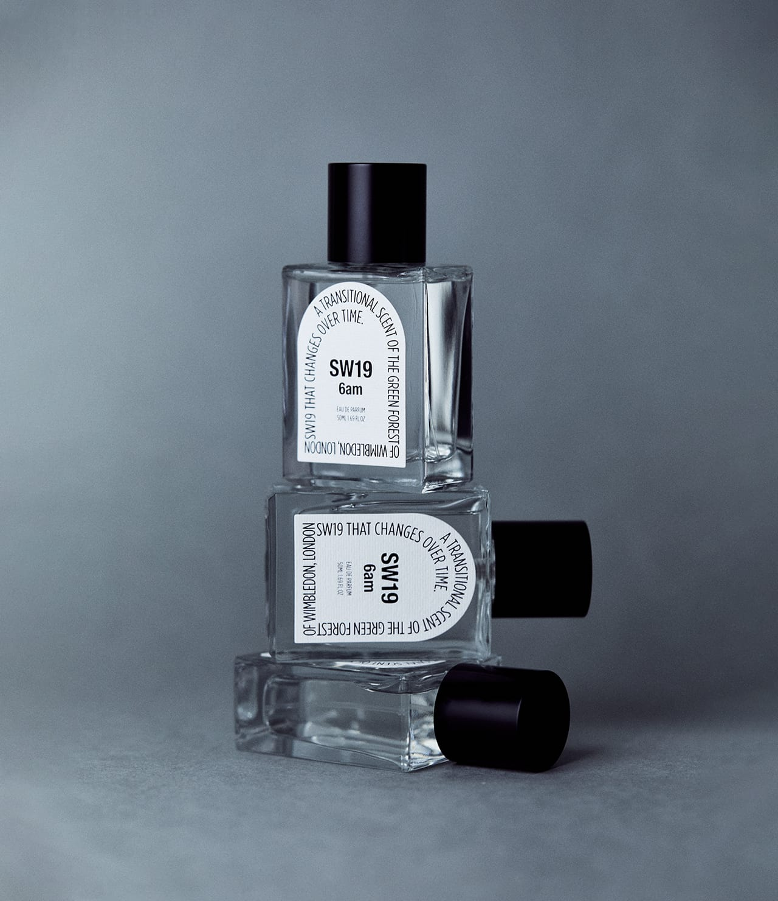

Collections


WIMBLEDON FOREST AT DAWN IN THE MIST
WIMBLEDON FOREST AT DAWN IN THE MIST
Just before the sunrise,
the mist of Wimbledon forest drifts along
and greets you as you take a stroll.
Feel the 6AM scent of the Wimbledon forest’s
glistening morning dew and moist soil.
안개가 자욱한 윔블던 숲의 새벽
세상의 아침이 시작되기 전,
윔블던의 숲을 산책하는 당신에게
푸른 안개가 바람에 실려와 인사를 합니다.
이슬 머금은 잔디와 촉촉한 흙내음을 품은
윔블던의 새벽 6시를 느껴보세요.